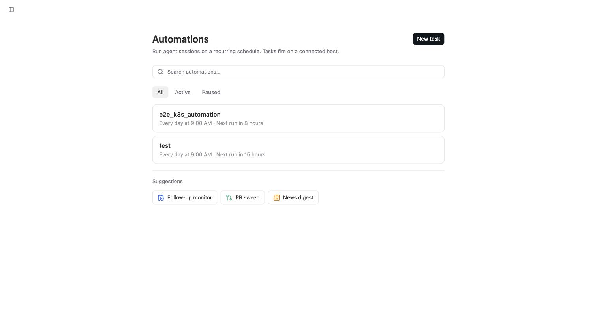
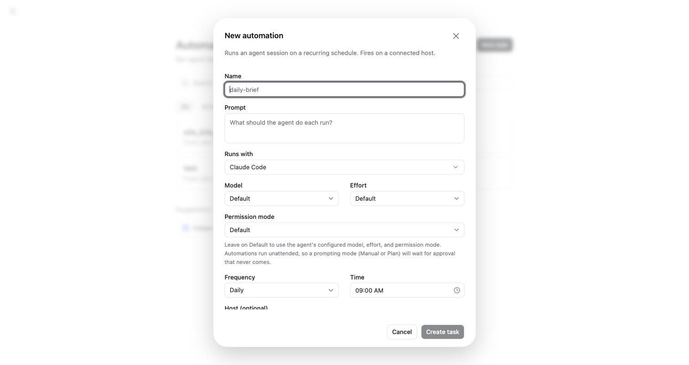

Automations：用排程讓代理自己跑
為何需要本章
有些工作每天都一樣：早上看一遍昨天的錯誤紀錄、掃一遍還沒合併的變更、把幾個來源整理成一份摘要。這些事不難，難的是「每天記得做」。
Automations 就是為這種工作設計的。側邊欄第二個入口（網址是 /tasks）上寫著它的定義：「Run agent sessions on a recurring schedule. Tasks fire on a connected host.」——照週期起 session，任務在一台已連線的主機上觸發。
這一章講怎麼建立一個排程、排程欄位實際長什麼樣、以及一個很容易踩、踩了會完全沒反應的坑：權限模式選錯，任務會在那裡等一個永遠不會來的核准。
核心觀念：它產生的是一條真的 Session
自動化（Automation）：一組「提示詞 + 執行者 + 時間」的設定。時間到了，Omnigent 就用那組設定自動開一條 session 跑起來，過程與結果跟你手動開的沒有兩樣。
這裡有兩個推論，先想清楚後面才不會意外。
- 它會花錢。排程跑出來的 session 一樣會計入用量與成本。每天一次的自動化，一個月就是三十條 session，這筆數字會出現在第 13 章的 Usage 頁上。
- 它沒有人看著。設定頁的原文用了
unattended這個字：「Automations run unattended.」意思是任何需要你按一下的環節，在排程情境下都不會有人按。
所以寫自動化提示詞的方式跟聊天不一樣：不要留「你覺得呢？」這種需要回話的句子，把要它做的事一次寫完整。

清單頁與三個現成範本
點側邊欄的 Automations 進來，這一頁只有幾個東西：
- 搜尋框：自動化多起來之後用它找。
- 三個篩選頁籤：
All、Active、Paused。找不到某條自動化時，先確認你不是停在Active而它已經被暫停。 Suggestions區塊：三個現成範本，Follow-up monitor（追蹤後續）、PR sweep（掃過待處理的變更）、News digest（做一份摘要）。
Paused 這個頁籤本身就是一個有用的資訊：自動化可以暫停，而暫停之後它仍然存在，不是被刪掉。要停掉一條每天跑的任務，暫停比刪除安全。
New automation 對話框的七組欄位
建立自動化的對話框由上而下是七組欄位，順序固定：
| 欄位 | 預設或提示 | 怎麼填 |
|---|---|---|
| Name | 佔位文字 daily-brief | 寫得像檔名，之後才搜尋得到 |
| Prompt | 佔位文字 What should the agent do each run? | 每次執行要做的事，一次寫完整，不要留問句 |
| Runs with | 框架或代理下拉 | 跟手動開 session 時同一份清單，標了 needs setup 的不要選 |
| Model／Effort | 兩個都預設 Default | 沒有特別理由就留 Default |
| Permission mode | 預設 Default | 這是最容易出事的一格，見下一節 |
| Frequency／Time | 例如 Daily 與 09:00 AM | 頻率是下拉選單，時間是時間欄 |
| Host (optional) | 預設 Resolve at fire time | 留著不動，就用觸發當下你連線中的主機 |
排程實際上怎麼設定
排程只有兩格：Frequency 下拉加上 Time 時間欄。介面上沒有 RRULE 之類的排程字串輸入框，也沒有 cron 表示式的欄位。如果你在別的資料上看過「用排程字串描述週期」的說法，那不是這個版本的畫面。
同樣地，本書的實機記錄沒有觀察到任何關於最短間隔的提示文字。這代表兩件事：不要假設有一個固定的分鐘下限，也不要假設一定可以設到很密。實際能選到多細，以你畫面上 Frequency 下拉裡列出的選項為準。
Host 留空是什麼意思
Host (optional) 的預設值 Resolve at fire time 底下寫著「Leave unset to run on your connected host when the task fires.」——時間到的時候，才去看你有哪台主機連線著，用那台跑。方便，但代價是：那個時間點沒有主機連線，任務就沒地方跑。如果這條自動化非跑不可，指定一台長期開機的主機比較保險。
最容易踩的一格：Permission mode
對話框裡有一段提示，值得整段照抄：
「Leave on Default to use the agent's configured model, effort, and permission mode. Automations run unattended, so a prompting mode (Manual or Plan) will wait for approval that never comes.」
翻成白話：會跳出來問你的權限模式（Manual 或 Plan），在排程情境下等於讓任務永遠卡住，因為沒有人在旁邊按核准。
這個坑之所以難查，是因為它不會報錯。清單上那條自動化看起來有在動，時間也對，就是永遠沒有產出。看到「有觸發但沒結果」，第一個要檢查的就是這一格。
同一段提示也解釋了 Default 的意思：留在 Default，就是沿用你在 Runs with 選的那個代理自己設定好的模型、投入程度與權限模式。所以真正該調的往往不是這個對話框，而是那個代理的設定。
開始之前
- 先手動跑一次一模一樣的提示詞。用同一個框架、同一台主機、同樣的句子開一條 session。手動跑不出來的東西，排程也跑不出來，而且排程失敗更難查。
- 確認要用的主機會在那個時間點連線。清單頁的說明寫著任務在已連線的主機上觸發。挑一台長期開著的機器，不要挑你晚上會關機的筆電。
- 先估一下成本。每天一次就是每月三十條 session。如果這條提示詞會讓代理讀很多檔案，先在 Usage 頁看一下手動那次花了多少，乘以三十。
建立第一個每日排程
-
從側邊欄進 Automations，先看範本
進
/tasks之後，先看Suggestions裡的三個範本：Follow-up monitor、PR sweep、News digest。如果你要做的事跟其中一個相近，從它開始改，比從空白開始快。 -
命名成搜尋得到的樣子
Name欄的佔位文字是daily-brief，這個示範已經說明了風格：像檔名、小寫、看得出頻率與用途。三個月後你會有十條自動化，名字取得好，搜尋框才有用。 -
把 Prompt 寫成一份完整的交辦
Prompt欄問的是「What should the agent do each run?」——每一次執行要做什麼。把範圍、要看的位置、要產出的格式全部寫進去。不要寫「有問題再問我」，沒有人會在那裡回答。 -
Model、Effort、Permission mode 三格都留 Default
第一次建立時不要動這三格。Default 的意思是沿用代理自己的設定；等到你確定要換模型或調投入程度，再回來改。特別不要把 Permission mode 改成 Manual 或 Plan。
-
設定 Frequency 與 Time，決定 Host 要不要指定
從
Frequency下拉挑週期（例如Daily），在Time填時間（例如09:00 AM）。挑一個你隔天會看結果的時間。Host (optional)留在Resolve at fire time就是用當下連線的主機；要求穩定的話指定一台。 -
建立之後回清單頁確認它在 Active
切到
Active頁籤，這條應該在裡面。不在的話，看Paused。這一步只花三秒，但可以省下「隔天早上為什麼沒跑」的疑惑。

怎麼確認做對了
建立當下看不出對錯，真正的驗收在第一次觸發之後。
- 觸發時間過後回到側邊欄，應該多出一條由這個自動化產生的 session，而且它有真正的產出，不是停在等待狀態。
- 清單頁的
Active頁籤裡看得到這條自動化。 - 到 Usage 頁把期間切到
7 days，session 數量應該比前一天多一條，成本也對得上。 - 如果指定了主機，那台主機在觸發時間是連線狀態（Composer 的 Host 下拉裡前面有綠點）。
故障排除
- 時間到了完全沒動靜：先看主機。任務在已連線的主機上觸發，而
Host (optional)留在Resolve at fire time的話，觸發當下沒有任何主機連線就無處可跑。改成指定一台長期開機的主機。 - 有開出 session，但它停在那裡沒有產出：檢查
Permission mode。選成 Manual 或 Plan 會讓它等一個永遠不會來的核准。改回Default。 - 清單上找不到剛建立的自動化：確認你在哪個頁籤。
All、Active、Paused是三個不同的檢視，被暫停的不會出現在 Active。真的找不到就用搜尋框打名字。 - 想貼一段排程字串卻沒有欄位可貼：這個版本的排程就是
Frequency下拉加Time時間欄，介面上沒有 RRULE 或 cron 的輸入框。要更複雜的週期，只能建立多條自動化來組合。 - 成本比預期高很多：排程是每個週期都真的開一條 session。到 Usage 頁把期間切到
30 days，看Cost by harness與Cost by model，就能認出是哪一條在吃錢。先把它暫停，再回頭改提示詞的範圍。 - 選了某個框架但它標著 needs setup：那代表這台主機上還沒把那個框架設定好，排程照樣會失敗。先在手動 session 裡把它跑通，再回來建自動化。
固定來源
清單頁文案、New automation 的七組欄位與兩段提示原文，來自 2026-09-09 對正式站的實機記錄，整理在本倉庫的 docs/research/ui-facts-2026-09-09.md。該記錄明確推翻了「用排程字串描述週期」與「有固定最短間隔」兩種說法：實機畫面上沒有那些欄位與提示。
常見問題
我可以設定每五分鐘跑一次嗎？
以你畫面上 Frequency 下拉實際列出的選項為準。本書的實機記錄看到的是下拉選單加時間欄的組合（例如 Daily 加 09:00 AM），沒有記錄到分鐘級的自訂，也沒有看到任何關於最短間隔的提示文字。所以這裡既不保證做得到，也不會告訴你有某個固定下限——打開下拉看一眼最快。
Automation 跟我自己開的 Session 是同一種東西嗎？
自動化本身是一組設定，它每次觸發會產生一條真正的 session。那條 session 跟你手動開的一樣：一樣有紀錄、一樣佔用主機、一樣計入成本。差別只在沒有人在旁邊看著它。
Model 跟 Effort 留在 Default 會用到什麼？
用你在 Runs with 選的那個代理自己設定好的值。對話框的提示寫得很明白：留在 Default 就是沿用該代理已設定的模型、投入程度與權限模式。想換模型的話，通常改代理的設定比在這個對話框裡逐條覆寫更好維護。
暫停一條自動化，之前跑過的紀錄會不會消失？
暫停的是未來的觸發。清單頁有獨立的 Paused 頁籤，被暫停的自動化仍然在那裡，隨時可以切回來。已經產生的 session 是獨立存在的紀錄，不會因為你暫停或修改自動化而改變。要停一條每天跑的任務，暫停比刪除安全。
Suggestions 裡的三個範本可以直接拿來用嗎？
Follow-up monitor、PR sweep、News digest 是起點而不是成品。它們幫你把欄位填成一個合理的形狀，但提示詞裡該看哪個位置、該產出什麼格式，還是要你自己補。建議照本章的步驟，先手動跑一次改好的提示詞，確定結果符合預期再存成排程。